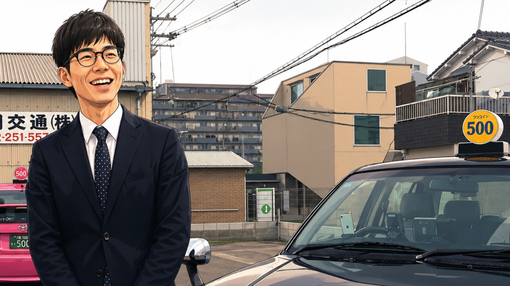

なぜタクシードライバーを、そしてワンコイン南花田を選んだのですか？
自由な時間を作りつつ、努力を給与に直結させたかったんです。
Youtubeやネットの情報など、自分で色々と調べた結果、ワンコイン南花田が大阪トップクラスの賃率だったので「稼ぐ効率」が一番良さそうだと判断しました。

「乗務員ファースト」について、答えてくれたタクシー乗務員さん
すぎやん 乗務歴1年目 夜勤
自由な時間を作りつつ、努力を給与に直結させたかったんです。
Youtubeやネットの情報など、自分で色々と調べた結果、ワンコイン南花田が大阪トップクラスの賃率だったので「稼ぐ効率」が一番良さそうだと判断しました。
「DiDi・GO・Uber・S-RIDE」の全てから配車がかかるので、お客様を探して走り回る必要がないんです。
お客様を探すゲーム感覚で、常に最短距離で実車に繋げられ、とても助かっています。
はい、僕も未経験から始めましたが、配車アプリのおかげで、経験の未熟さを補うことができました。
そのおかげもあって、１か月目から目標金額に到達することができました。
これが最大の魅力です。週休2日以上、しっかり休めるから、出勤日の集中力が維持できるんです。オンオフを切り替えることで、プライベートを犠牲にせず、売上も満足いく結果を出せました。
シフトは、当日の朝9時までに会社へ連絡することで、自由に変更できます。
他の仕事なら、急に休む時に後ろめたいものですが、ワンコイン南花田では乗務員一人一人にシフトの管理を任されていますので、気兼ねなく調整できるんです。
ワンコイン南花田は、いつでもタクシー乗務員が主役でいられる環境創りを大事にしています。
高い収入だけでなく、自由な時間、気楽な人間関係、タクシー乗務を通して、全てを実現してください。
これが、私たちワンコイン南花田の合言葉です。